00이 매뉴얼에 대하여
구조·토목 계산서 통합 포털은 내진설계 의무대상 판정 · 건축물 설계하중 · 단지 우수·오수 배관 · 옹벽 안전성 검토까지 MANMIN 구조 · 토목 계산서 4종의 진입 화면입니다. 포털은 계산하지 않습니다. 카드를 눌러 계산서로 들어가고, 계산서마다 적용한 근거 법령과 설계기준(KDS)을 한 화면에서 확인합니다.
| 항목 | 내용 |
|---|---|
| 대상 프로그램 | 구조·토목 계산서 통합 포털 Ver 1.0.0 |
| 접속 주소 | manminkim-eng.github.io/struct-civil-portal |
| 매뉴얼 판 | Ver-1.0 · 2026-10-30 · 작성 김만민 건축사(㈜대성건축사사무소) |
| 내려받기 | PDF(A4) · 포털 열기 |
| 근거 대조 | 국가법령정보(LawMCP) 2026-10-30 — 법령은 현행 시행일 · 조문 제목. KDS 명칭은 각 계산서 표기이며 원문 · 개정 이력은 국가건설기준센터에서 확인 |
| 범위 | 안내 · 연결 도구 — 수치 기준과 계산은 각 계산서에서 합니다 |
01한눈에 보기
설치 없이 브라우저에서 바로 열리는 단일 페이지(PWA)입니다. 입력값이 없고, 연결과 근거 안내만 합니다.
1-1. 화면 구성
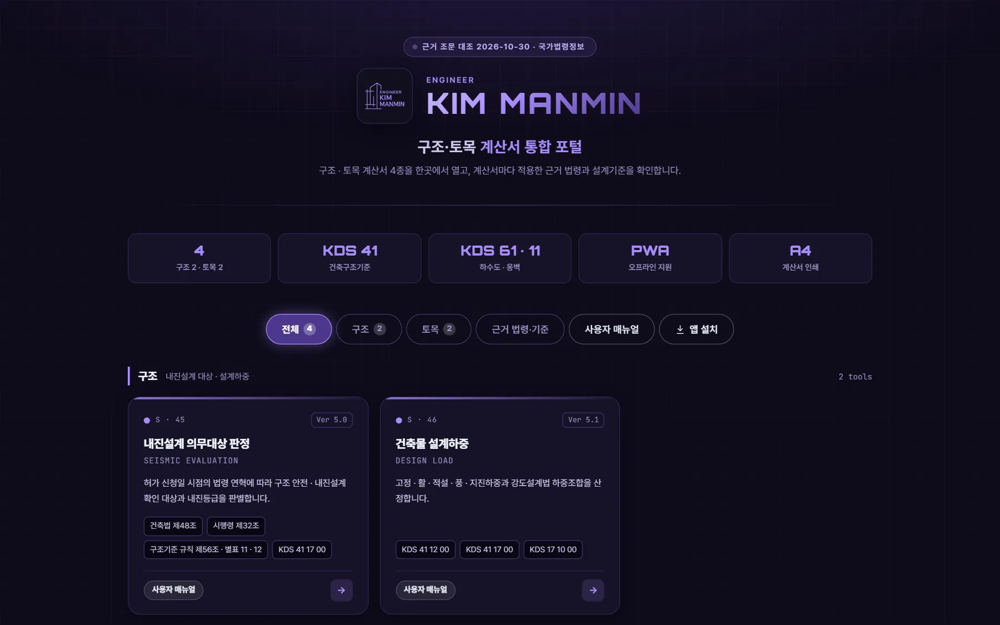
12345- 1근거 조문 대조일
- 2포털 이름
- 3요약 5칸
- 4분류 탭 · 근거 · 매뉴얼 · 앱 설치
- 5계산서 카드
| 영역 | 내용 |
|---|---|
| 머리 | 근거 조문 대조일, 포털 이름, 설명 |
| 요약 5칸 | 계산서 4종(구조 2 · 토목 2) · KDS 41 건축구조기준 · KDS 61 · 11 하수도 · 옹벽 · PWA · A4 |
| 탭 막대 | 전체 · 구조 · 토목 / 근거 법령·기준 / 사용자 매뉴얼 / 앱 설치(설치할 수 있는 브라우저에서만) |
| 계산서 카드 | 카드를 누르면 계산서, 「사용자 매뉴얼」을 누르면 그 계산서의 매뉴얼(새 창) |
| 근거 법령 · 설계기준 | 법령 · KDS 6행 — 현행 시행일 · 관련 조문 · 코드 · 적용 도구, 아래에 안내 |
1-2. 연결 계산서 4종
| 분류 | 번호 | 계산서 | 버전 | 근거 기준 | 매뉴얼 |
|---|---|---|---|---|---|
| 구조 | S · 45 | 내진설계 의무대상 판정 | Ver 5.0.8 | 건축법 제48조 · 시행령 제32조 · 구조기준 규칙 제56조 · 별표 11 · 12 · KDS 41 17 00 | 매뉴얼 |
| 구조 | S · 46 | 건축물 설계하중 | Ver 5.1.0 | KDS 41 12 00 · KDS 41 17 00 · KDS 17 10 00 | 매뉴얼 |
| 토목 | C · 50 | 단지 우수 · 오수 배관 | Ver 5.1.0 | KDS 61 40 00 · KDS 61 10 00 | 매뉴얼 |
| 토목 | C · 51 | 옹벽 안전성 검토 | Ver 5.1.0 | KDS 11 80 05 · KDS 11 60 00 · KDS 11 70 05 · 시설물안전법 시행령 별표 1 제8호 | 매뉴얼 |
021분 따라하기
예: 단지 안 옹벽과 우수 배관을 함께 검토하는 현장 — 포털에서 계산서를 찾아 들어가고 근거를 확인하는 순서입니다.
- ① 포털 열기manminkim-eng.github.io/struct-civil-portal — 탭 막대의 「앱 설치」로 홈 화면에 설치할 수 있습니다(3-8).
- ② 분류「토목」 탭을 누르면 단지 우수 · 오수 배관과 옹벽 안전성 검토 카드 2장만 남습니다(3-2).
- ③ 근거 확인옹벽 카드의 칩 「KDS 11 80 05」 「시설물안전법 시행령 별표 1 제8호」를 확인합니다(3-5).
- ④ 매뉴얼카드 아래 「사용자 매뉴얼」 — 그 계산서의 매뉴얼이 새 창으로 열립니다.
- ⑤ 계산서카드를 누르면 계산서로 이동해 옹벽의 전도 · 활동 · 지지력을 검토하고, 같은 방법으로 배관 계산서에서 관경과 유속을 정합니다.
- ⑥ 시행일 확인포털 아래 「근거 법령 · 설계기준」 표에서 현행 시행일과 KDS 코드를 확인합니다(3-6).
- 1토목만 보기
- 2토목 카드 2장
03화면별 기능
3-1. 머리
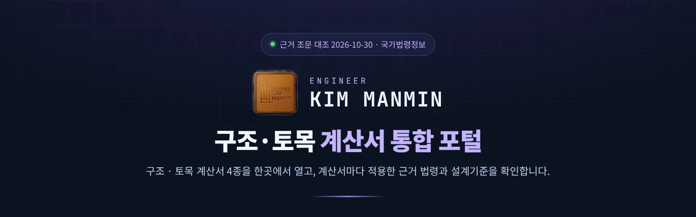
1234- 1근거 조문 대조일
- 2ENGINEER KIM MANMIN
- 3구조·토목 계산서 통합 포털
- 4포털 설명
맨 위 표시줄은 근거 조문을 국가법령정보와 대조한 날짜(2026-10-30)입니다.
3-2. 분류 탭
- 1전체 4
- 2구조 2
- 3토목 2
- 4근거 법령·기준
- 5사용자 매뉴얼
- 6앱 설치
「전체 4」 · 「구조 2」 · 「토목 2」은 누르면 해당 묶음만 보여 줍니다. 「근거 법령·기준」은 아래 근거표로 이동하고, 「사용자 매뉴얼」은 이 문서를 새 창으로 엽니다(온라인 전용). 「앱 설치」는 설치할 수 있는 브라우저에서만 나타납니다(3-8).
3-3. 계산서 카드
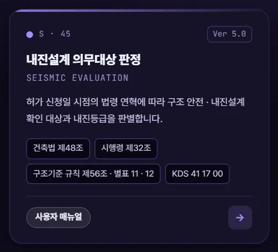
1234567- 1공종 번호(S · 폴더 번호)
- 2계산서 현재 버전
- 3계산서 이름
- 4계산 내용
- 5근거 기준 칩
- 6사용자 매뉴얼(새 창)
- 7계산서 열기
카드 위 번호 「S · 45」 · 「C · 50」은 홈페이지 도구 허브의 공종 표기(S 구조 · C 토목)와 개발 폴더 번호입니다. 버전은 계산서의 현재 판이고, 칩은 그 계산서가 산출근거로 인용하는 법령 · KDS입니다.
3-4. 구조
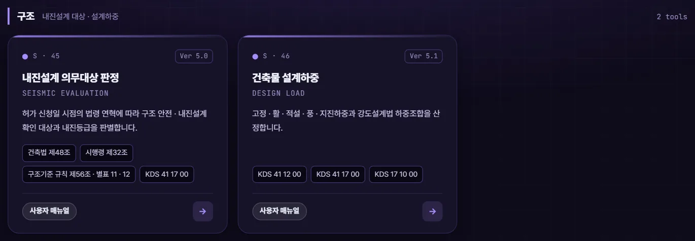
12- 145 내진설계 의무대상 판정
- 246 건축물 설계하중
내진설계 의무대상 판정은 허가 신청일 시점의 법령 연혁으로 판정하므로, 계산서에는 지금은 삭제된 옛 조문(예: 1992-06-01 시행 구조기준 규칙 제7조의2)이 근거로 나올 수 있습니다. 포털 근거표는 현행 조문만 적습니다.
3-5. 토목
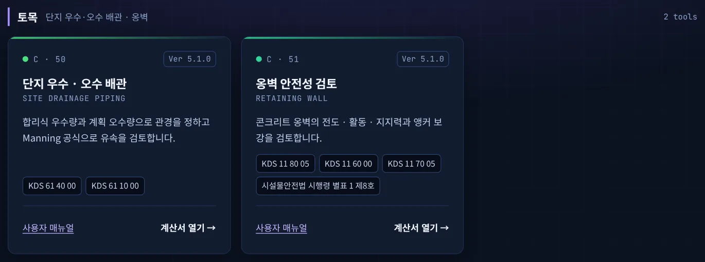
12- 150 단지 우수 · 오수 배관
- 251 옹벽 안전성 검토
3-6. 근거 법령 · 설계기준
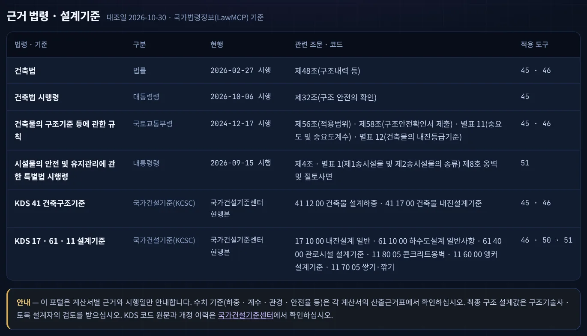
123456- 1건축법 · 시행령
- 2구조기준 규칙
- 3시설물안전법 시행령
- 4KDS 41 건축구조기준
- 5KDS 17 · 61 · 11
- 6안내 — 수치 기준은 계산서
표 아래 안내문은 포털의 원칙(근거 · 시행일만 안내, 수치 기준은 계산서)과 구조 검토 확인 사항입니다. KDS 원문과 개정 이력은 국가건설기준센터에서 확인합니다(4-2).
3-7. 휴대전화 화면
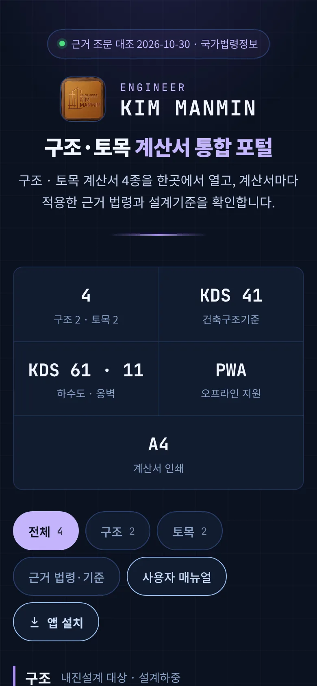
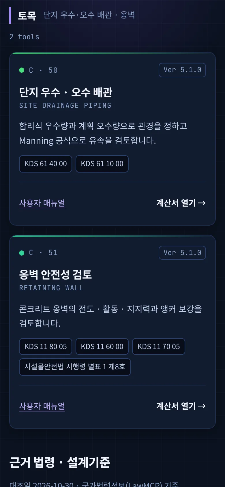
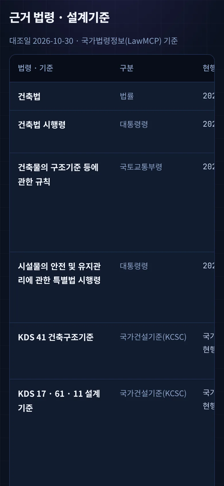
좁은 화면에서는 카드가 한 줄씩 쌓이고, 근거표는 좌우로 밀어서 봅니다.
3-8. 앱 설치
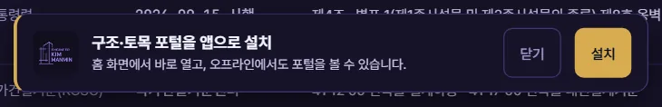
123- 1설치 안내
- 2닫기 — 이 세션 동안 다시 띄우지 않음
- 3설치 — 브라우저 설치 창
| 구분 | 방법 |
|---|---|
| 크롬 · 엣지 · 삼성인터넷 등 | 탭 막대 「앱 설치」 또는 안내 띠의 「설치」 → 브라우저 설치 창에서 설치 |
| 아이폰 · 아이패드 | 「앱 설치」를 누르면 안내 상자 — 공유 단추 → 「홈 화면에 추가」 → 「추가」 |
| 안내 띠 | 첫 방문 2초 뒤 한 번 표시 — 「닫기」를 누르면 그 세션 동안 다시 띄우지 않음 |
| 나타나지 않는 경우 | 이미 설치한 앱 화면 · 설치를 지원하지 않는 브라우저(데스크톱 파이어폭스 등) · 설치를 막 거절한 직후 |
| 설치 범위 | 이 포털(/struct-civil-portal/)만 설치됩니다 — 카드에서 연 계산서는 앱 안의 브라우저 창으로 열리고, 계산서도 앱으로 쓰려면 각 계산서에서 설치합니다 |
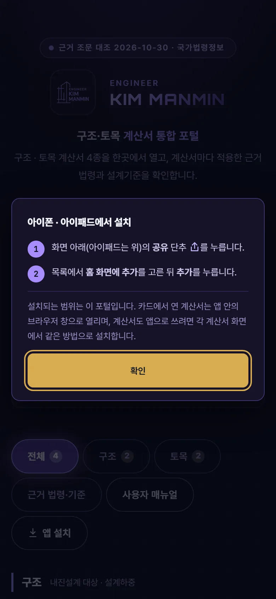
04근거 해설
4-1. 근거 체계
| 법령 · 기준 | 구분 | 현행 | 관련 조문 · 코드 | 적용 도구 |
|---|---|---|---|---|
| 건축법 | 법률 | 2026-02-27 시행 | 제48조(구조내력 등) | 45 · 46 |
| 건축법 시행령 | 대통령령 | 2026-10-06 시행 | 제32조(구조 안전의 확인) | 45 |
| 건축물의 구조기준 등에 관한 규칙 | 국토교통부령 | 2024-12-17 시행 | 제56조(적용범위) · 제58조(구조안전확인서 제출) · 별표 11(중요도 및 중요도계수) · 별표 12(건축물의 내진등급기준) | 45 · 46 |
| 시설물의 안전 및 유지관리에 관한 특별법 시행령 | 대통령령 | 2026-09-15 시행 | 제4조 · 별표 1(제1종시설물 및 제2종시설물의 종류) 제8호 옹벽 및 절토사면 | 51 |
| KDS 41 건축구조기준 | 국가건설기준(KCSC) | 국가건설기준센터 현행본 | 41 12 00 건축물 설계하중 · 41 17 00 건축물 내진설계기준 | 45 · 46 |
| KDS 17 · 61 · 11 설계기준 | 국가건설기준(KCSC) | 국가건설기준센터 현행본 | 17 10 00 내진설계 일반 · 61 10 00 하수도설계 일반사항 · 61 40 00 관로시설 설계기준 · 11 80 05 콘크리트옹벽 · 11 60 00 앵커 설계기준 · 11 70 05 쌓기·깎기 | 46 · 50 · 51 |
4-2. KDS 확인과 구조 검토
| 구분 | 내용 |
|---|---|
| KDS 코드 | KDS(국가건설기준 설계기준)는 국가법령정보가 아니라 국가건설기준센터(kcsc.re.kr)에서 고시 · 개정됩니다. 포털은 코드와 명칭만 적고 개정 연도 · 고시 번호는 각 계산서 표기를 따릅니다 |
| 구조 안전 확인 | 건축법 제48조제2항 · 시행령 제32조에 따라 건축 · 대수선 시 설계자가 구조 안전을 확인하고, 시행령 제32조제2항 대상은 착공신고 때 확인 서류를 냅니다(구조기준 규칙 제58조 서식) |
| 옹벽 시설물 | 지면 노출 높이 5 m 이상 부분의 합이 100 m 이상인 옹벽은 시설물안전법 시행령 별표 1 제8호의 제2종시설물입니다 — 계산서는 해당 여부를 안내합니다 |
| 최종 검토 | 계산서 결과는 설계 검토 자료입니다. 최종 구조 설계값은 구조기술사 · 토목 설계자의 검토를 받으십시오 |
4-3. 포털과 계산서의 역할
| 구분 | 역할 |
|---|---|
| 포털 | 계산서 진입 · 분류 · 근거 법령과 시행일 · KDS 코드 안내 — 수치 기준을 싣지 않습니다 |
| 계산서 | 입력 · 계산 · 판정 · 산출근거표 · A4 계산서 — 수치 기준과 조항은 계산서가 정본입니다 |
| 갱신 | 법령이 바뀌면 계산서를 먼저 고치고, 포털 근거표는 시행일 · 번호만 고칩니다(데이터 단일 원천 _tools/build_portal.py) |
05문제 해결·FAQ
| 증상 | 해결 |
|---|---|
| 포털에서 계산이 되나요 | 아닙니다 — 카드를 눌러 각 계산서에서 계산합니다 |
| 「사용자 매뉴얼」이 안 열려요 | 매뉴얼은 온라인 전용입니다(오프라인 캐시에서 제외) |
| 수치 기준은 어디 있나요 | 각 계산서의 산출근거표와 A4 계산서에 있습니다 — KDS 원문은 국가건설기준센터에서 확인합니다 |
| 「앱 설치」 단추가 안 보여요 | 이미 설치했거나, 설치를 지원하지 않는 브라우저입니다 — 크롬 · 엣지에서 열어 보십시오(3-8) |
| 설치한 앱에서 계산서가 브라우저 창으로 열려요 | 정상입니다 — 설치 범위가 포털뿐이라서입니다. 계산서도 각자 설치할 수 있습니다 |
| 계산서마다 디자인이 달라요 | 계산서는 각각 별도 저장소의 도구라 헤드 색과 판이 다를 수 있습니다 |
| 화면이 예전 판이에요 | 새로 고침(Ctrl+F5) 또는 앱을 닫았다 다시 여십시오 — 판이 바뀌면 캐시 이름이 바뀝니다 |
부록
A1. 버전 변경 내역
| 버전 | 내용 |
|---|---|
| Ver 1.0.0 · 매뉴얼 Ver-1.0 (2026-10-30) | 신설 — 계산서 4종 · 분류 2(구조 · 토목) · 근거 법령 · 설계기준표 · 앱 설치 단추 · 사용자 매뉴얼 |
A2. 용어
| 용어 | 뜻 |
|---|---|
| 구조 안전의 확인 | 건축법 제48조제2항 · 시행령 제32조 — 설계자가 구조기준에 따라 구조 안전(지진 포함)을 확인하는 절차 |
| 중요도 · 내진등급 | 구조기준 규칙 별표 11(중요도 및 중요도계수) · 별표 12(건축물의 내진등급기준) |
| KDS | 국가건설기준 설계기준(Korean Design Standard) — 국가건설기준센터 고시 |
| 합리식 | 강우강도 · 유출계수 · 배수면적으로 우수 유출량을 구하는 식 |
| PWA | 홈 화면에 설치해 오프라인에서도 여는 웹앱 |